Hello there
Full-stack engineer · TypeScript / Node / PostgreSQL · Based in Manchester, UK
3+ years shipping production web applications across freelance and instructional environments. Hands-on with CI/CD pipeline design, REST API architecture, and mentoring junior developers. Comfortable owning technical decisions end-to-end in fast-moving, small-team contexts.
adamsip2012@gmail.com · github.com/airommel · LinkedIn
BSc Computer Science, The Chinese University of Hong Kong (Ranked Top 30 in CS) · MIT IDSS Data Science & Machine Learning
Open to full-stack roles in the UK
My role: Freelance full-stack developer (2025 – Present) — built and maintain SF Express logistics API integration, POS system integration, and automated order-fulfilment workflows for the live NGO retail platform.
A live WooCommerce/WordPress e-commerce platform for the Hong Kong NGO Health In Action's community pharmacy programme. Serves real customers daily; integrates SF Express courier APIs for label generation and tracking, and bridges retail POS data for inventory consistency across online and in-store channels.
Tech Stack: PHP, JavaScript, WooCommerce, WordPress, MySQL, REST APIs
Projects directed and mentored at Tecky Academy (Dec 2022 – Dec 2024). Codebases authored by student teams; my role focused on architecture review, PR review, hands-on debugging, and unblocking technical decisions. Not all mentored projects are included.
My role: Technical mentor (Tecky Academy) — directed architecture, reviewed PRs, and debugged production blockers across a tight 2–3 week sprint. Codebase authored by the student team.
A pet-care services marketplace connecting owners with providers. Features Stripe-backed payments with held/release funds, multi-role accounts (clients, providers, admins) with identity verification, an all-in-one task dashboard with calendar, and real-time booking updates via Socket.io.
Tech Stack: React, Node.js, Express, TypeScript, PostgreSQL, Knex, Stripe, Socket.io, AWS S3
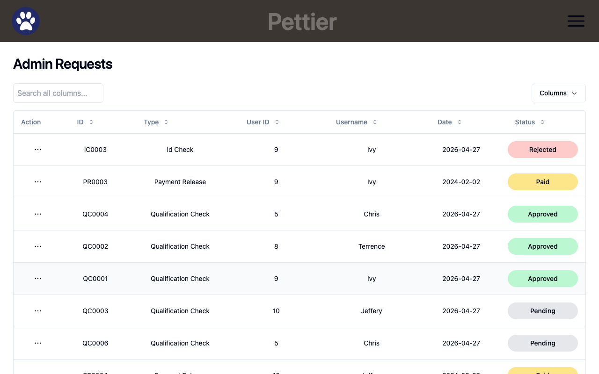
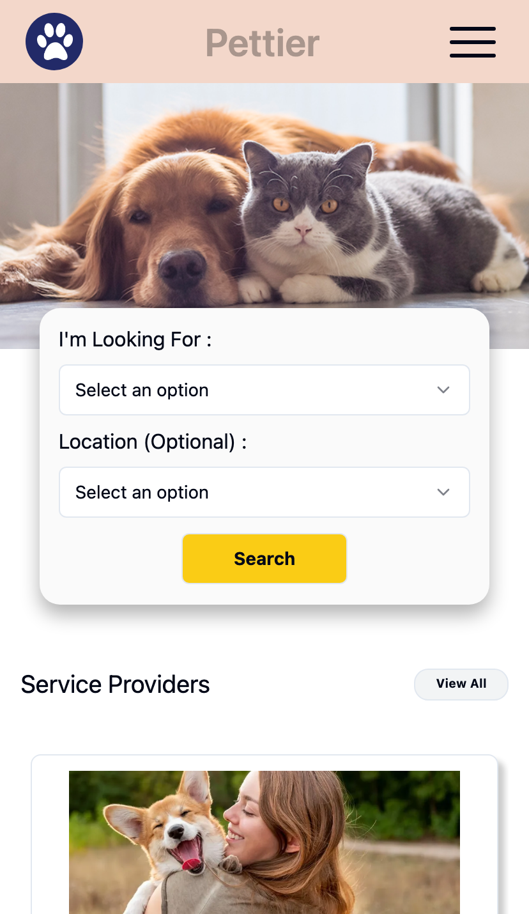
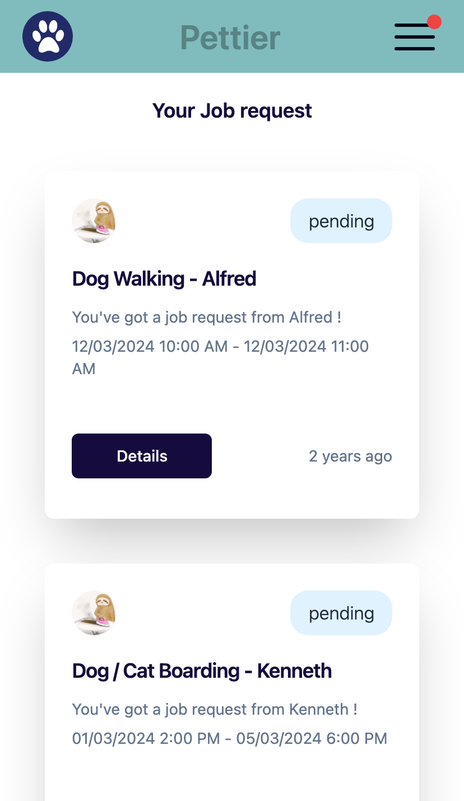
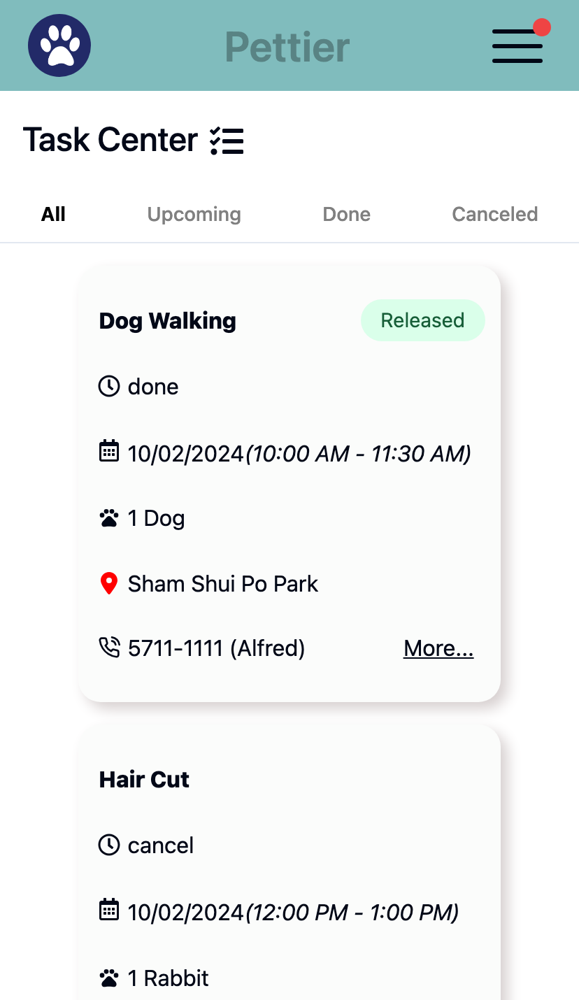
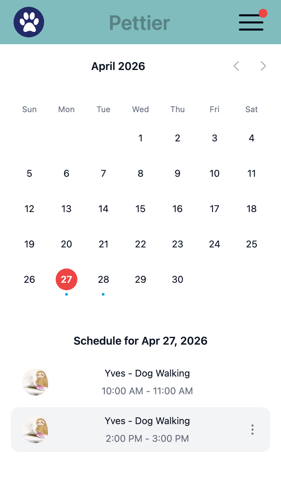
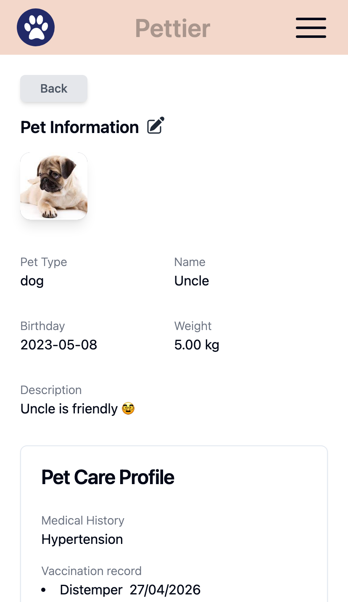
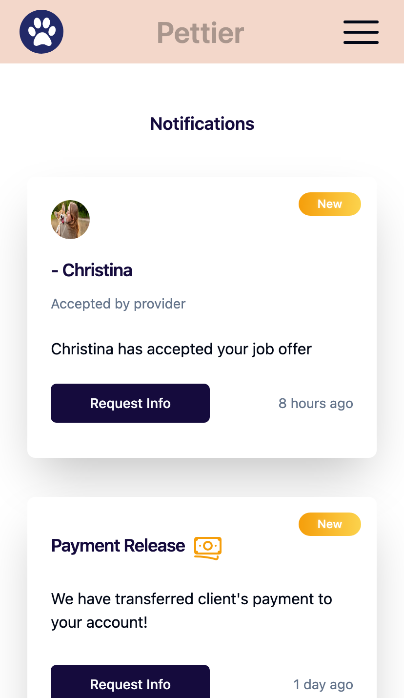
My role: Technical mentor (Tecky Academy) — guided React Native structure, real-time chat with Socket.io, and AWS deployment; reviewed PRs and unblocked data-sync issues between frontend and backend. Codebase authored by the student team.
A React Native mobile app matching users with personal trainers and fellow fitness enthusiasts based on shared goals. Features personalised profiles, swipe-style discovery, and real-time messaging powered by Socket.io.
Tech Stack: React Native, TypeScript, Node.js, Express, Socket.io, PostgreSQL, Knex, Docker, GitHub Actions, AWS EC2
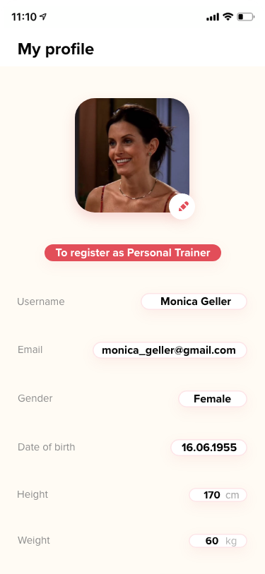
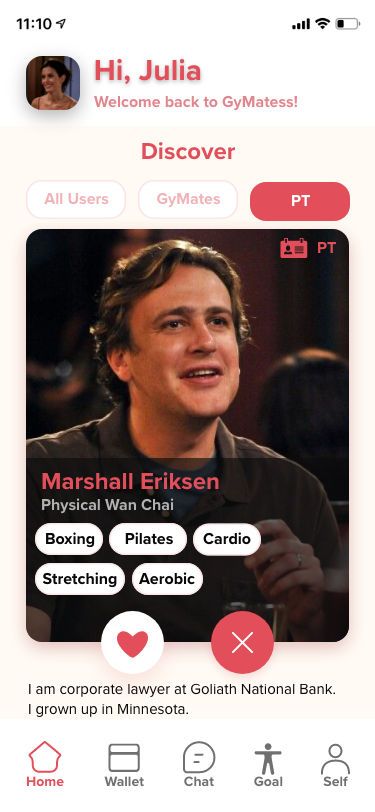
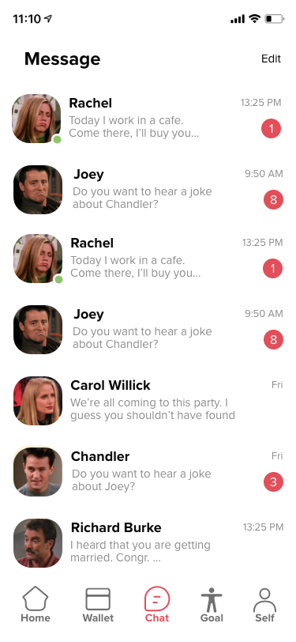
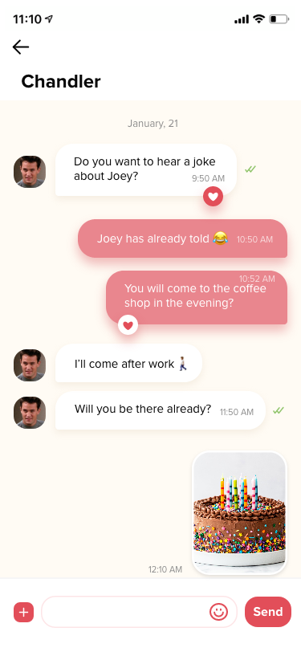
My role: Technical mentor (Tecky Academy) — directed the Node.js/Python cross-language architecture, reviewed PRs, and guided the TensorFlow plant-classifier integration. Codebase authored by the student team.
A hiking-trail discovery web app for Hong Kong with an AI-powered toxic-plant classifier. Trails are browsable by district with difficulty, duration, and Google Maps integration; users can upload a photo of a plant and have it classified by a TensorFlow model served from a separate Python (Sanic) microservice behind the Node/Express API.
Tech Stack: TensorFlow, TypeScript, Python, Node.js, Express, Sanic, PostgreSQL, Knex, Google Maps API
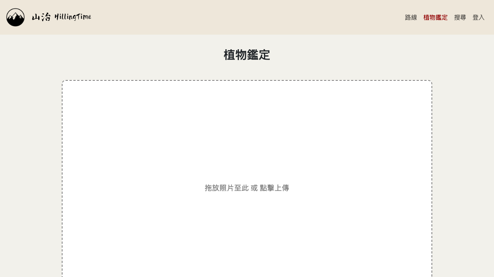
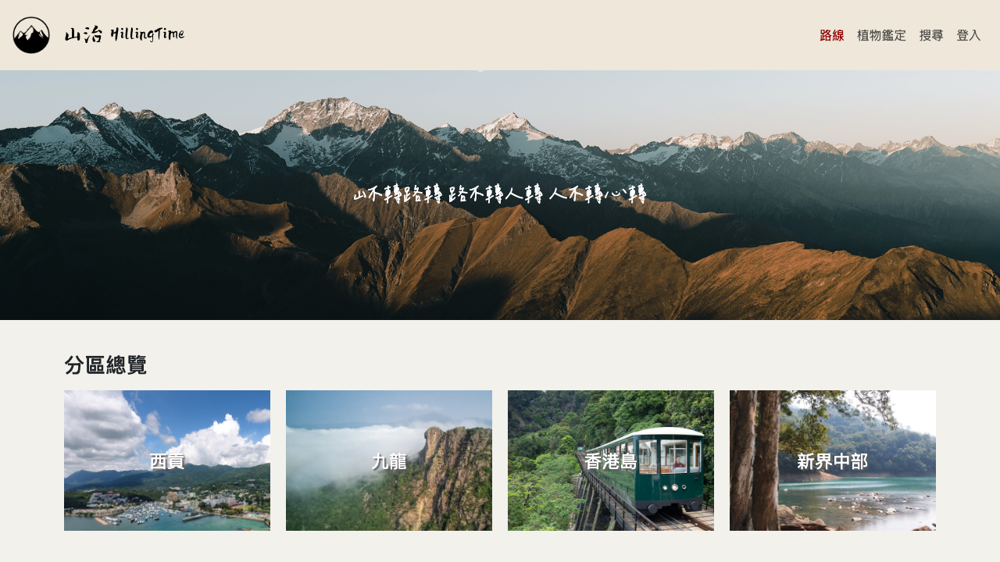
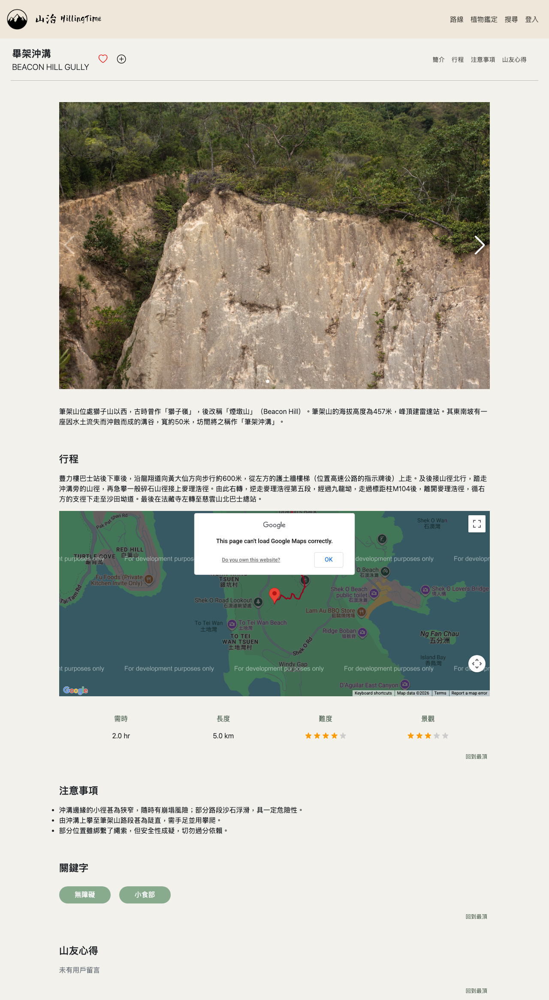